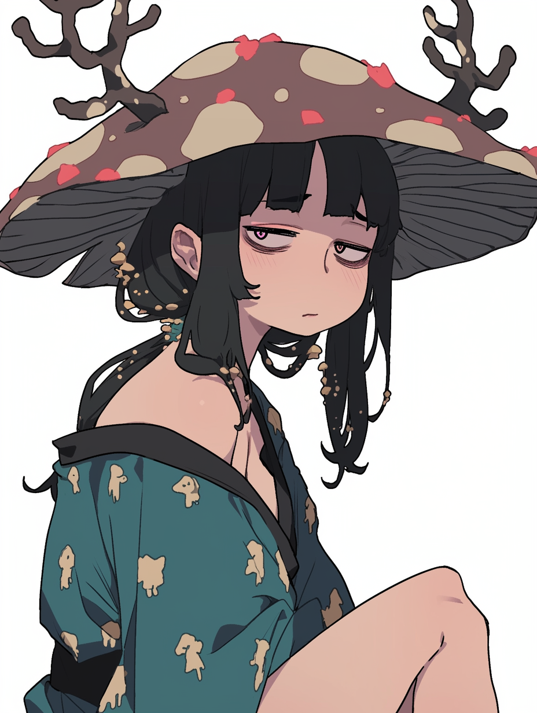

✦ 白白菌 ✦
菌问好
菌在忙
菌在玩
菌做梦

白白菌
Target · 交互叙事 · 有益菌种
LLM
搜索推荐
复杂网络
Agent开发
交互式叙事
跑团
"我体验过真正的沉浸，我希望把这种感觉带给更多人。"
向下滚动
探索
Explore · 各区入口
🍄
菌在忙
蘑菇汤计划 · 跑团工具箱
Meta-Skill Set · 小说续写
🎲
菌在玩
跑团 · 策略 · 叙事 · 构筑
多品类杂食玩家
🖼️
菌做梦
Art Nouveau · 蛛丝织梦
菌林幻境 · 视觉审美